O que é tratamento de canal?
É o procedimento que remove a parte inflamada ou infectada de dentro do dente, limpa e sela o canal. Assim, a dor passa e o seu dente natural é preservado, sem precisar de extração.
Conheça o meu trabalho:
- CRO SC 13142
- Formada na UFSC
- Mestre, Doutora e Especialista em Endodontia pela UFSC
- Mais de 15 anos referência em tratamento de canal
- Mais de 5 mil dentes reabilitados
- Microscopia Eletrônica
- Protocolo de tratamento de canal sem dor
- Especialista em lidar com medo / ansiedade
- Limpezas, Clareamento, Restaurações, Próteses, Coroas, ATM – Saiba Mais
Quando é indicado fazer um tratamento endodôntico?
- Dor de dente intensa ou persistente.
- Sensibilidade prolongada ao frio ou ao calor.
- Dor ao mastigar ou ao tocar o dente.
- Inchaço na gengiva ou presença de fístula.
- Escurecimento do dente após um trauma.
Dra. Morgane Marion: Especialista em Endodontia, com mestrado e doutorado pela UFSC. Coautora de diversos artigos científicos e relatos de experiência nas áreas de saúde bucal, disfunção temporomandibular e sistemas endodônticos, aliando conhecimento científico, experiência clínica e dedicação à excelência no tratamento odontológico.
Meu currículo acadêmico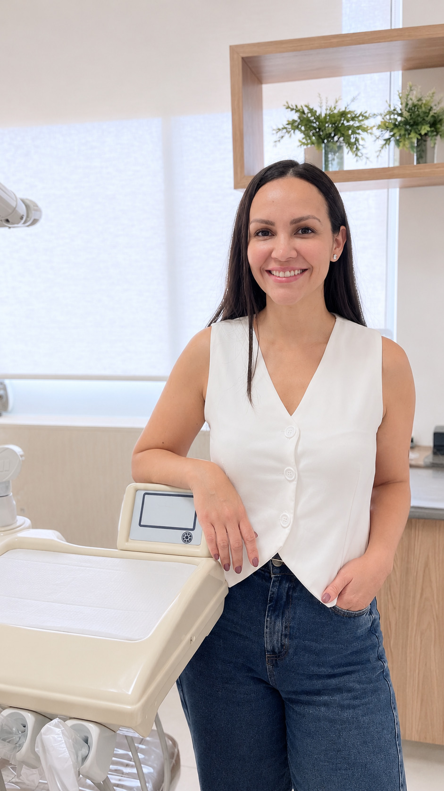
Meus Resultados
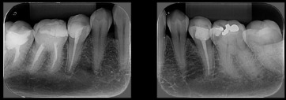
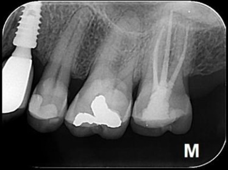
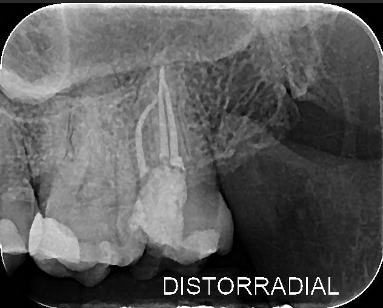
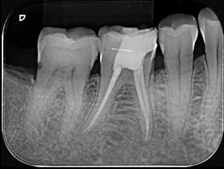
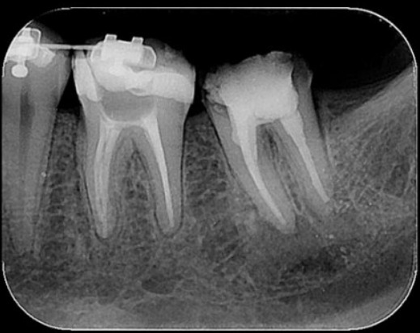
Como funciona o tratamento endodôntico
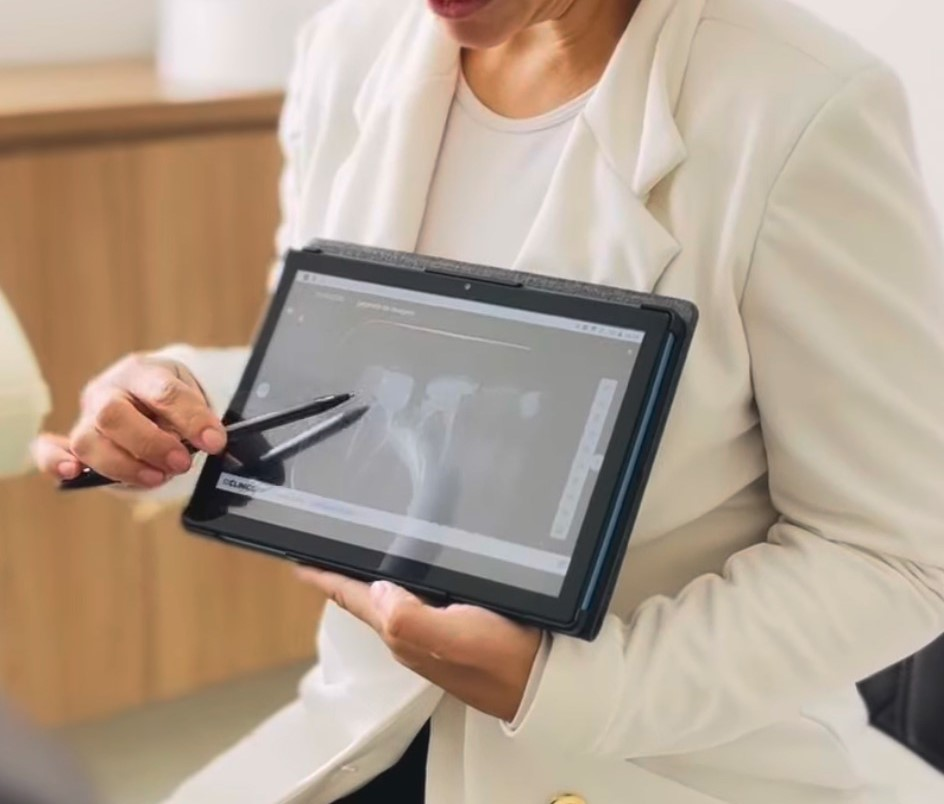
1Avaliação e Diagnóstico
Exames clínicos, radiológicos, planejamento do tratamento de canal.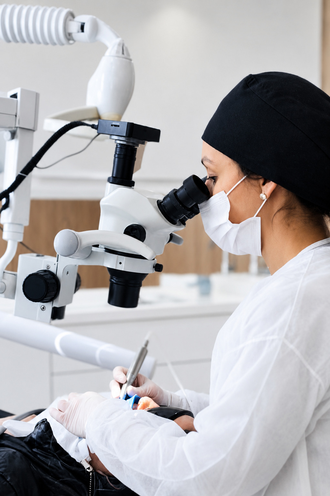
2Realização do tratamento de canal
Remoção da polpa, limpeza dos canais e aplicação do protocolo endodôntico.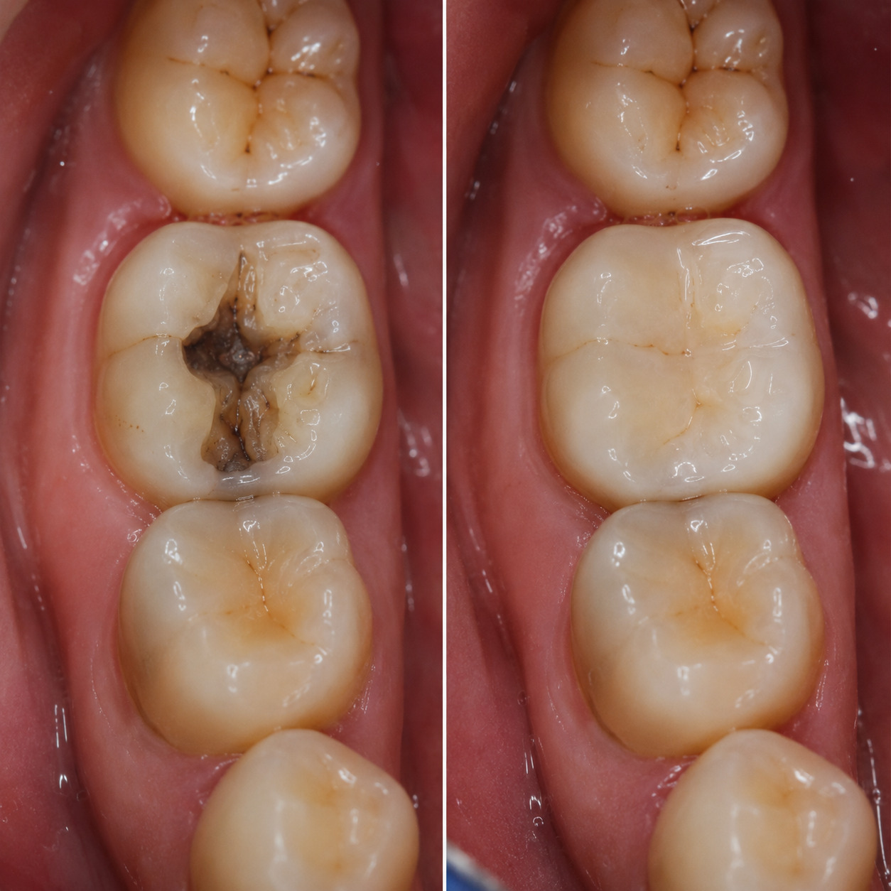
3Reabilitação
Selamento, restauração do dente e finalização do tratamento.Um protocolo exclusivo para transformar sua experiência com o tratamento de canal.
A Dra. Morgane Marion desenvolveu um protocolo que prioriza o conforto e o bem-estar do paciente, com um tratamento que pode ser realizado em uma única sessão, quando indicado, e com recuperação rápida. Além disso, possui experiência no acolhimento de pacientes que sentem medo ou ansiedade diante do tratamento de canal, oferecendo um atendimento humanizado, seguro e individualizado.
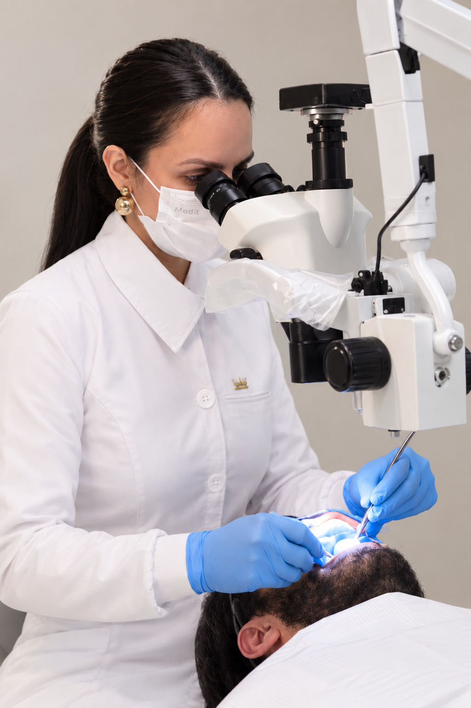
Contamos com tecnologia de ponta e equipamentos de alta precisão para realizar tratamentos endodônticos complexos
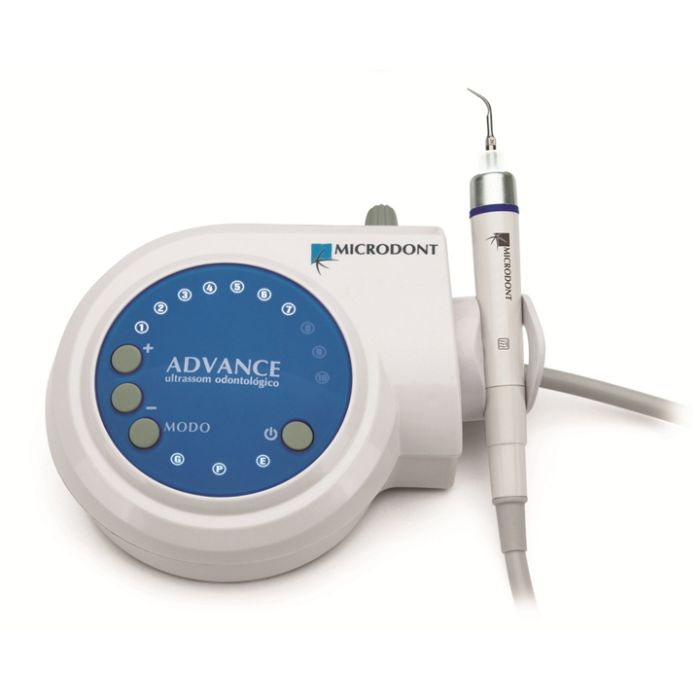
1Ultrassom
Remover calcificações e pinos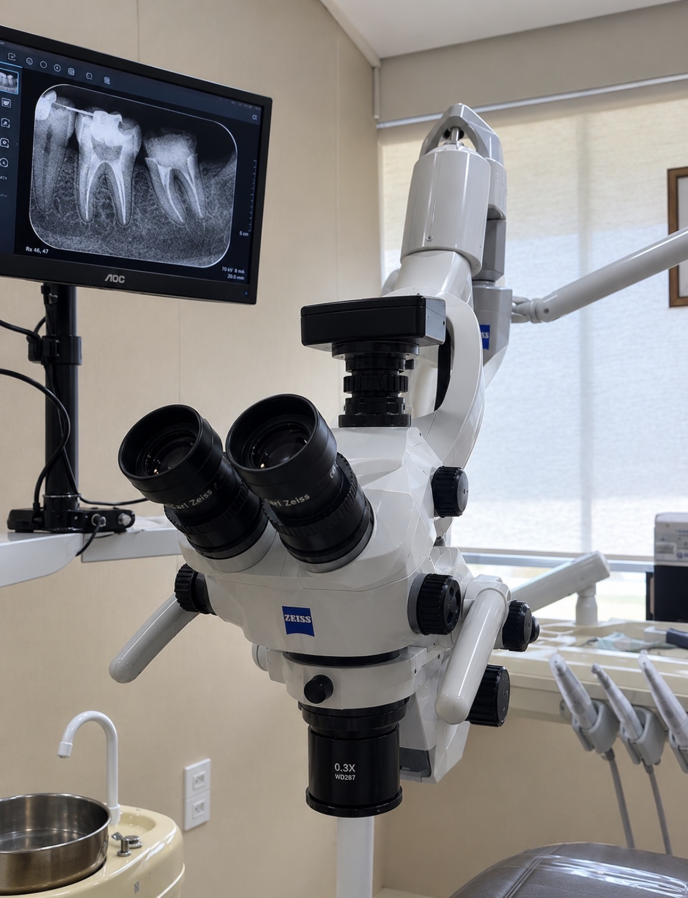
2Microscópio eletrônico
Permite enxergar detalhes internos do dente, como a polpa e o sistema de canais radiculares, que são invisíveis ou muito difíceis de ver a olho nu.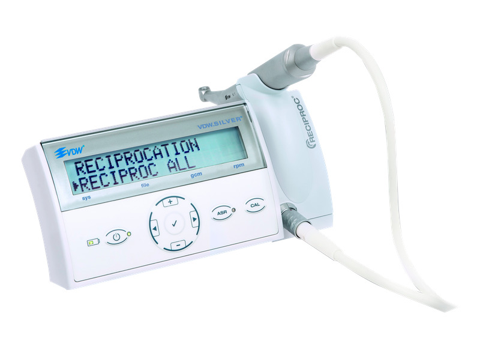
3Sistema mecanizado
Uso de limas especiais acionadas por um motor elétrico, substituindo ou complementando o trabalho manual tradicional.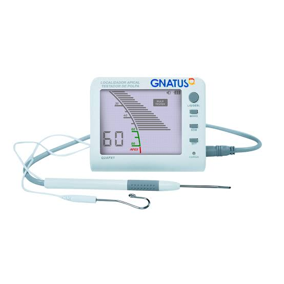
4Localizador apical
Determinar com precisão o comprimento real de trabalho do canal radicular.Conheça o nosso espaço
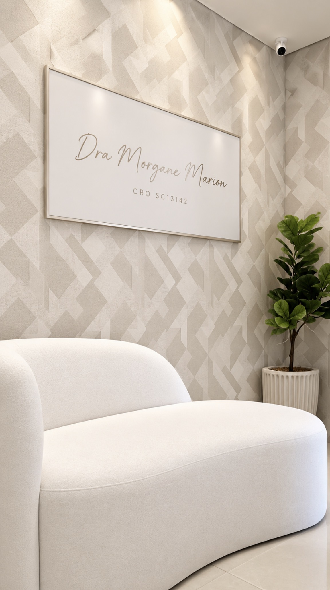
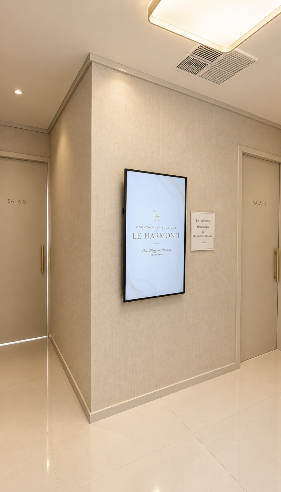
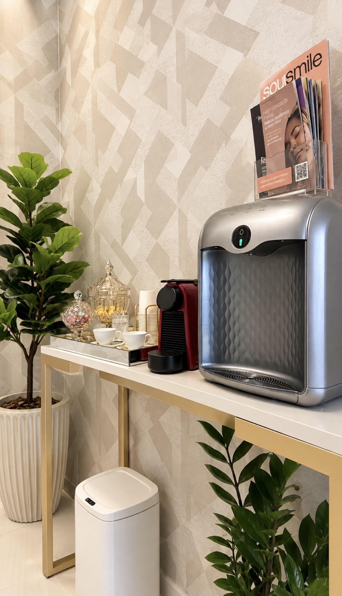
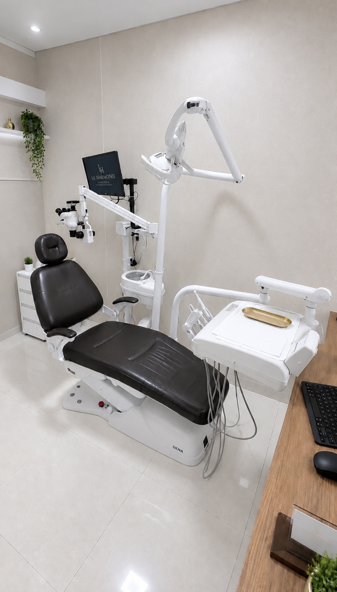
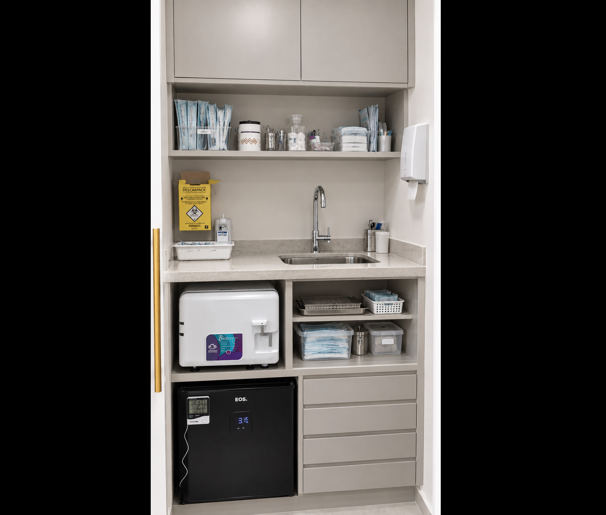
Depoimentos
“Eu estava precisando de uma endodontista e depois de muita procura senti confiança na Dra. Morgane. Ela é muito simpática e me deixou super confortável desde o início.”
Florianópolis
“Só a Dra. Morgane conseguiu clarear o meu dente, que estava escurecido por causa de um tratamento de canal que fiz anos atrás. Fiquei muito feliz com o resultado! Parabéns, Dra. Morgane, pelo trabalho e pelo cuidado. Super recomendo!”
São Jose
“Recomendo a clínica! Desde o primeiro atendimento pelo WhatsApp até o resultado do meu clareamento, fui muito bem atendido. Tudo feito com muito cuidado e atenção e o resultado ficou incrível! Amei!”
Florianópolis
“Excelente profissional! Acabei de fazer um tratamento de canal, e tudo foi resolvido em um dia, sem nenhuma dor...”
Florianópolis
“Eu morro de medo de dentista, mas a Dra. Morgane me deu todo o suporte e respeitou o meu tempo durante o tratamento. Foi incrível, não senti dor nenhuma. Nossa, recomendo demais a Dra. Morgane, ela realmente tem mãos de fada! Recomendo muito a clínica e, principalmente, para quem precisa fazer tratamento de canal e tem medo de dentista.”
São Jose
“Super recomendo! A clínica odontológica oferece um atendimento humanizado e de alta qualidade, tenho pavor a destinta e foram super paciente comigo. Fiz meu retiramento de canal do dente 26 e uma coroa e fiquei muito satisfeita com o resultado. A dentista e toda a equipe estão de parabéns. Indico para que tem medo de ir ao dentista.”
Palhoça
“Uma das melhores experiências que já tive em uma clínica odontológica. Fim meu protocolo Full face e harmonização com a Dra Morgane. A dentista é muito qualificada, transmite confiança e sabe o que faz.”
Florianópolis
“Gostei muito do atendimento. A clínica odontológica possui um ambiente moderno. A Dra me ajudou a escolher o melhor protocolo de clareamento dental para mim. Desejo sucesso para equipe e a dentista demonstrou grande profissionalismo.”
Palhoça
“Excelente experiência! Cheguei à clínica odontológica com muita dor e fui atendido rapidamente. O tratamento de canal foi realizado com muito cuidado e a dentista Dra Morgane foi extremamente atenciosa durante todo meu processo de recuperação.”
São Jose
“Depois de pesquisar bastante no Google, escolhi esta clínica odontológica pelas avaliações para realizar meu tratamento de canal. Foi a melhor decisão. A dentista é muito competente e toda a equipe é cordial e prestativa!”
Florianópolis
Entenda mais sobre o tratamento de canal
O tratamento de canal, também chamado de tratamento endodôntico, é o procedimento indicado quando a polpa do dente, o tecido interno que contém nervos e vasos sanguíneos, é atingida por cárie profunda, trauma ou infecção.
Sem tratamento, a infecção se espalha, pode causar abscesso, destruição óssea e levar à perda do dente. O tratamento de canal elimina a infecção, alivia a dor e salva o dente natural.
A Dra. Morgane Marion atende em Florianópolis e região, incluindo São José e Palhoça. Além do tratamento de canal, é especialista em retratamento endodôntico, indicado quando um dente que já fez canal volta a apresentar dor, inchaço ou infecção.
Perguntas frequentes
Quando é indicado fazer um tratamento endodôntico?
Em casos de dor de dente intensa ou persistente, sensibilidade prolongada ao frio ou ao calor, dor ao mastigar ou tocar o dente, inchaço na gengiva ou fístula e escurecimento do dente após trauma.
O tratamento de canal dói?
O procedimento é realizado com anestesia, e o protocolo da Dra. Morgane Marion prioriza o conforto e o bem-estar do paciente, com acolhimento de quem sente medo ou ansiedade.
O canal pode ser feito em uma única sessão?
Sim, quando indicado. Após a avaliação, a endodontista define se o tratamento pode ser concluído em uma única sessão.
O que é tratamento endodôntico?
É o tratamento de canal: remove o tecido comprometido da polpa, limpa e desinfecta os canais radiculares e os preenche e sela, eliminando a infecção e preservando o dente natural.
Acompanhe meu trabalho
Formas de Pagamento
Parcelamento em até 10 vezes sem juros no cartão
Como chegar
R. Dr. José de Patta, 50, Sala 03, Santa Mônica, Florianópolis – SC
Fontes
- Associação Americana de Endodontistas (AAE) — informações sobre o tratamento de canal, suas etapas e a preservação do dente natural. Root Canal Treatment – AAE
- Ministério da Saúde — informações sobre a oferta de tratamento endodôntico no atendimento odontológico especializado. Ministério da Saúde – Saúde Bucal
- Secretaria de Estado de Saúde do Distrito Federal — protocolo clínico de endodontia, com indicações e orientações sobre o tratamento. Protocolo de Atenção à Saúde – Endodontia